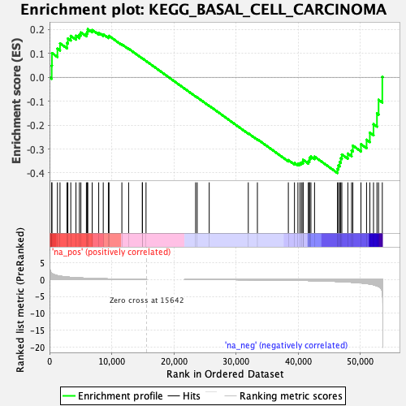
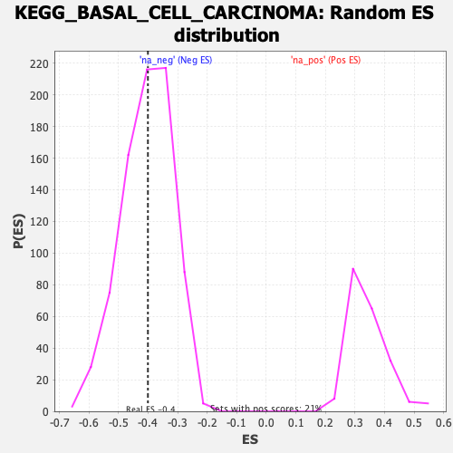

| | | Dataset | prerank |
| Phenotype | NoPhenotypeAvailable |
| Upregulated in class | na_neg |
| GeneSet | KEGG_BASAL_CELL_CARCINOMA |
| Enrichment Score (ES) | -0.40065303 |
| Normalized Enrichment Score (NES) | -0.99245584 |
| Nominal p-value | 0.47607052 |
| FDR q-value | 1.0 |
| FWER p-Value | 1.0 |
Table: GSEA Results Summary

Fig 1: Enrichment plot: KEGG_BASAL_CELL_CARCINOMA
Profile of the Running ES Score & Positions of GeneSet Members on the Rank Ordered List
| SYMBOL | RANK IN GENE LIST | RANK METRIC SCORE | RUNNING ES | CORE ENRICHMENT | | 1 | APC2 | 348 | 1.844 | 0.0489 | No |
| 2 | WNT10B | 387 | 1.775 | 0.1016 | No |
| 3 | WNT10A | 1274 | 1.155 | 0.1198 | No |
| 4 | WNT3 | 1685 | 0.999 | 0.1421 | No |
| 5 | WNT16 | 2813 | 0.744 | 0.1435 | No |
| 6 | WNT9A | 2956 | 0.721 | 0.1625 | No |
| 7 | TCF7L1 | 3420 | 0.645 | 0.1732 | No |
| 8 | DVL2 | 4255 | 0.543 | 0.1740 | No |
| 9 | WNT7B | 4807 | 0.486 | 0.1783 | No |
| 10 | FZD1 | 5047 | 0.464 | 0.1878 | No |
| 11 | GLI3 | 5934 | 0.390 | 0.1830 | No |
| 12 | GLI2 | 6084 | 0.379 | 0.1916 | No |
| 13 | FZD7 | 6157 | 0.374 | 0.2015 | No |
| 14 | FZD2 | 6867 | 0.325 | 0.1981 | No |
| 15 | DVL3 | 7917 | 0.263 | 0.1864 | No |
| 16 | FZD8 | 8648 | 0.225 | 0.1795 | No |
| 17 | WNT6 | 9472 | 0.187 | 0.1698 | No |
| 18 | WNT8B | 9575 | 0.181 | 0.1733 | No |
| 19 | GLI1 | 11646 | 0.103 | 0.1378 | No |
| 20 | SUFU | 12733 | 0.070 | 0.1197 | No |
| 21 | FZD5 | 14935 | 0.013 | 0.0790 | No |
| 22 | FZD4 | 14959 | 0.013 | 0.0790 | No |
| 23 | STK36 | 15533 | 0.002 | 0.0684 | No |
| 24 | DVL1 | 23517 | -0.019 | -0.0800 | No |
| 25 | TP53 | 23769 | -0.023 | -0.0840 | No |
| 26 | FZD3 | 25707 | -0.033 | -0.1191 | No |
| 27 | WNT8A | 31996 | -0.069 | -0.2344 | No |
| 28 | BMP2 | 33462 | -0.087 | -0.2591 | No |
| 29 | FZD6 | 38444 | -0.190 | -0.3463 | No |
| 30 | WNT5A | 39431 | -0.219 | -0.3581 | No |
| 31 | WNT2 | 39984 | -0.238 | -0.3612 | No |
| 32 | FZD10 | 40309 | -0.251 | -0.3597 | No |
| 33 | TCF7L2 | 40555 | -0.259 | -0.3565 | No |
| 34 | WNT4 | 40804 | -0.269 | -0.3531 | No |
| 35 | PTCH2 | 40813 | -0.269 | -0.3451 | No |
| 36 | WNT1 | 41655 | -0.302 | -0.3517 | No |
| 37 | HHIP | 41829 | -0.310 | -0.3456 | No |
| 38 | WNT7A | 41859 | -0.311 | -0.3368 | No |
| 39 | SHH | 42080 | -0.319 | -0.3313 | No |
| 40 | SMO | 42662 | -0.346 | -0.3318 | No |
| 41 | FZD9 | 46356 | -0.573 | -0.3834 | Yes |
| 42 | WNT5B | 46505 | -0.586 | -0.3686 | Yes |
| 43 | WNT3A | 46722 | -0.605 | -0.3544 | Yes |
| 44 | APC | 46885 | -0.619 | -0.3388 | Yes |
| 45 | GSK3B | 47054 | -0.633 | -0.3230 | Yes |
| 46 | WNT9B | 48019 | -0.726 | -0.3191 | Yes |
| 47 | LEF1 | 48621 | -0.795 | -0.3064 | Yes |
| 48 | WNT2B | 48827 | -0.818 | -0.2857 | Yes |
| 49 | AXIN1 | 50134 | -0.996 | -0.2801 | Yes |
| 50 | AXIN2 | 51033 | -1.182 | -0.2613 | Yes |
| 51 | WNT11 | 51564 | -1.324 | -0.2314 | Yes |
| 52 | TCF7 | 52154 | -1.538 | -0.1962 | Yes |
| 53 | BMP4 | 52710 | -1.838 | -0.1513 | Yes |
| 54 | CTNNB1 | 52971 | -2.062 | -0.0942 | Yes |
| 55 | PTCH1 | 53571 | -3.557 | 0.0016 | Yes |
Table: GSEA details [plain text format]

Fig 2: KEGG_BASAL_CELL_CARCINOMA: Random ES distribution
Gene set null distribution of ES for KEGG_BASAL_CELL_CARCINOMA